Target
A virtual world built with Stable Diffusion, shaped by the visual memory of early 3D video games.
The project imagines a static environment populated by fixed characters, empty streets, NPC-like figures and suspended situations. Everything appears playable, but nothing really moves.
Target explores the feeling of being inside a low-resolution simulation — a world of surveillance, distance and artificial calm where the viewer becomes the target.
2026
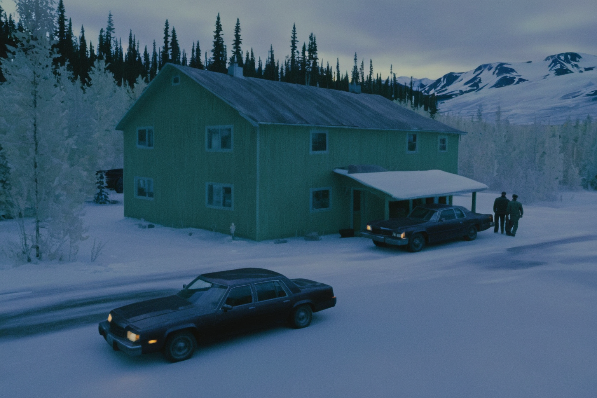
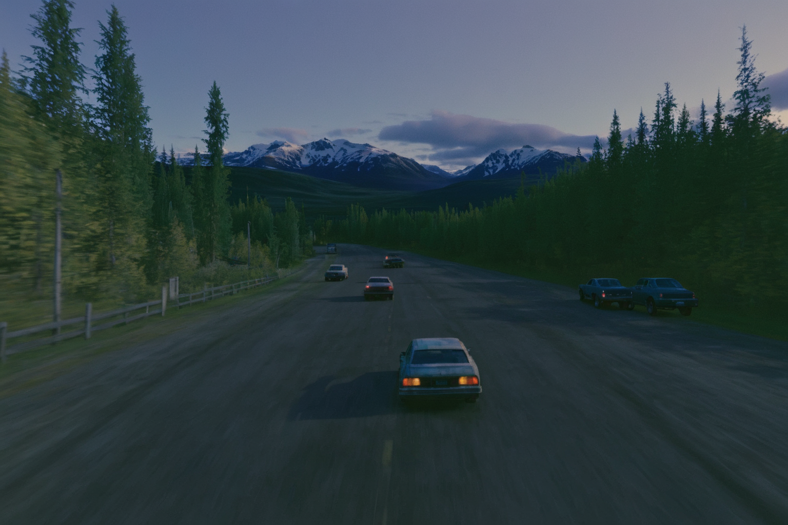
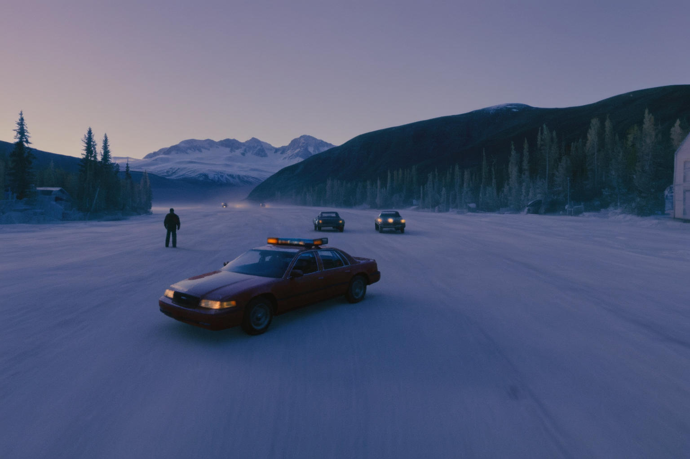
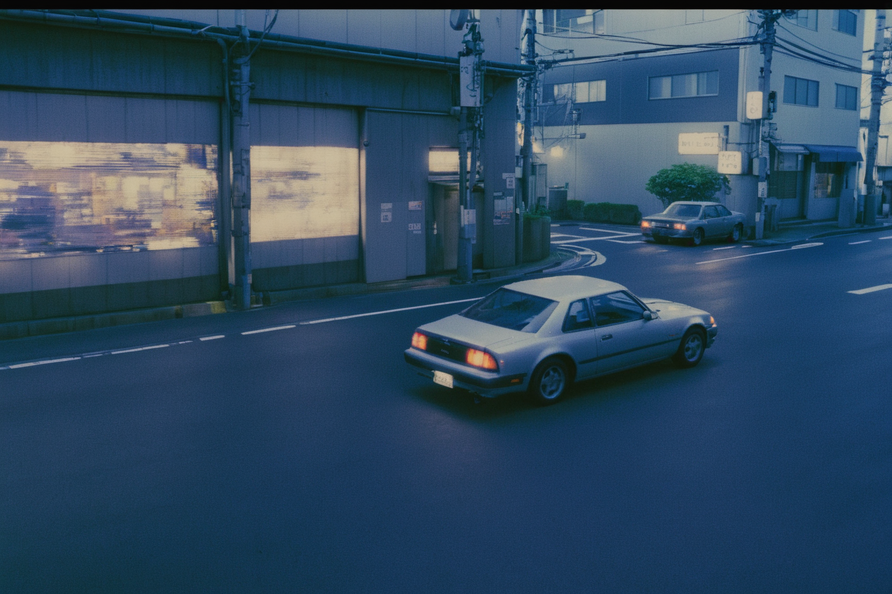
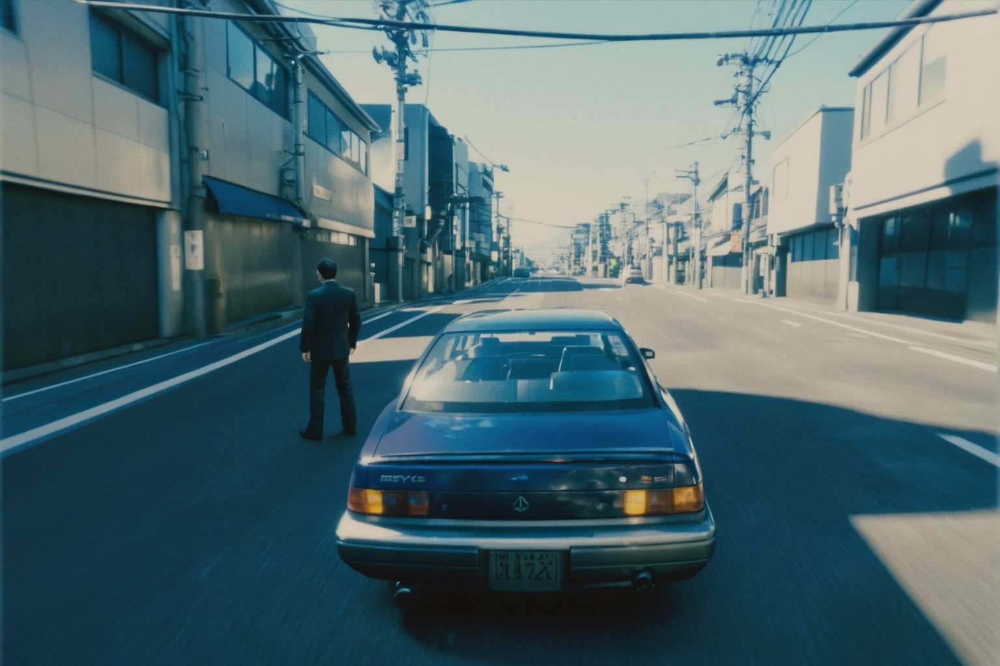
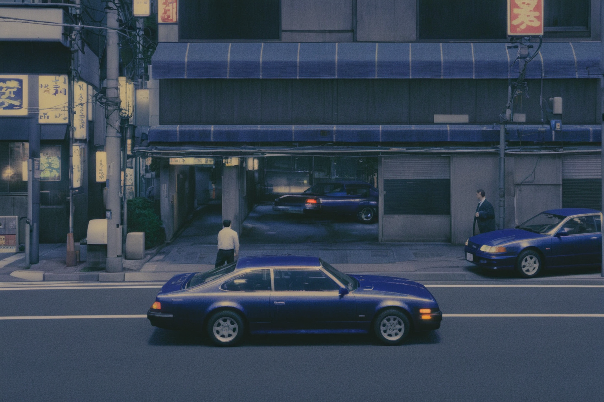
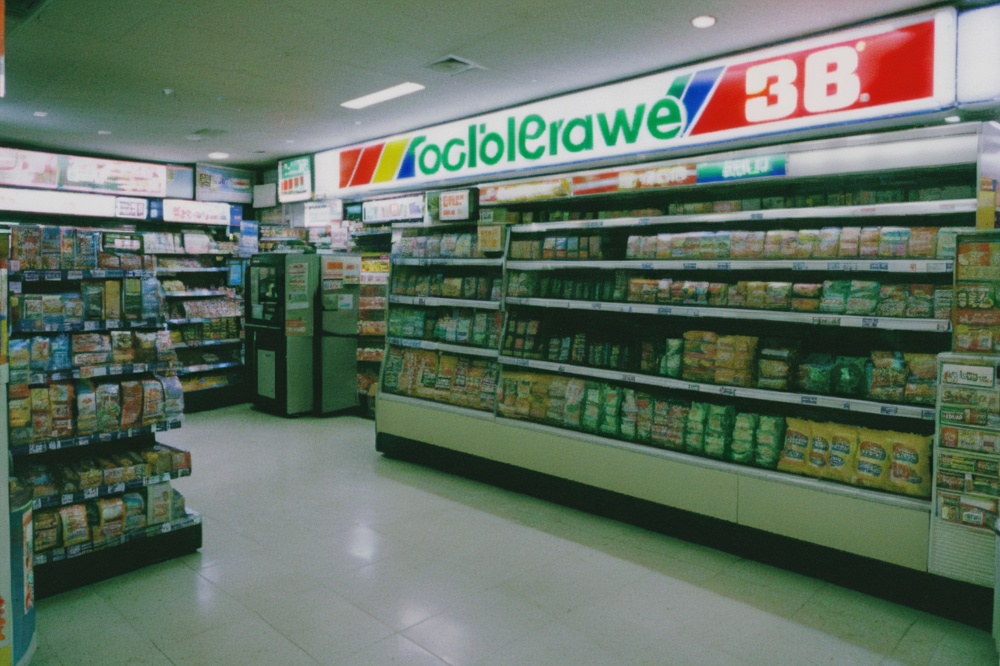
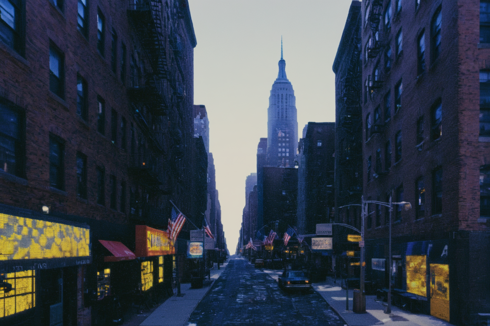
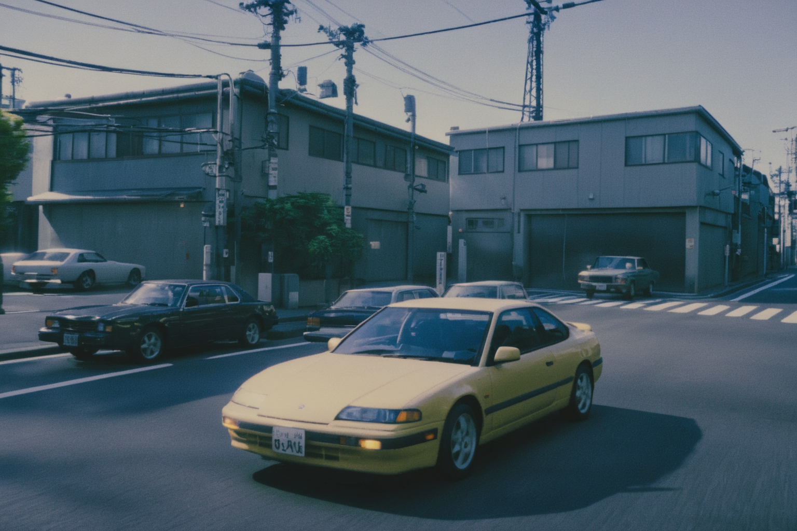
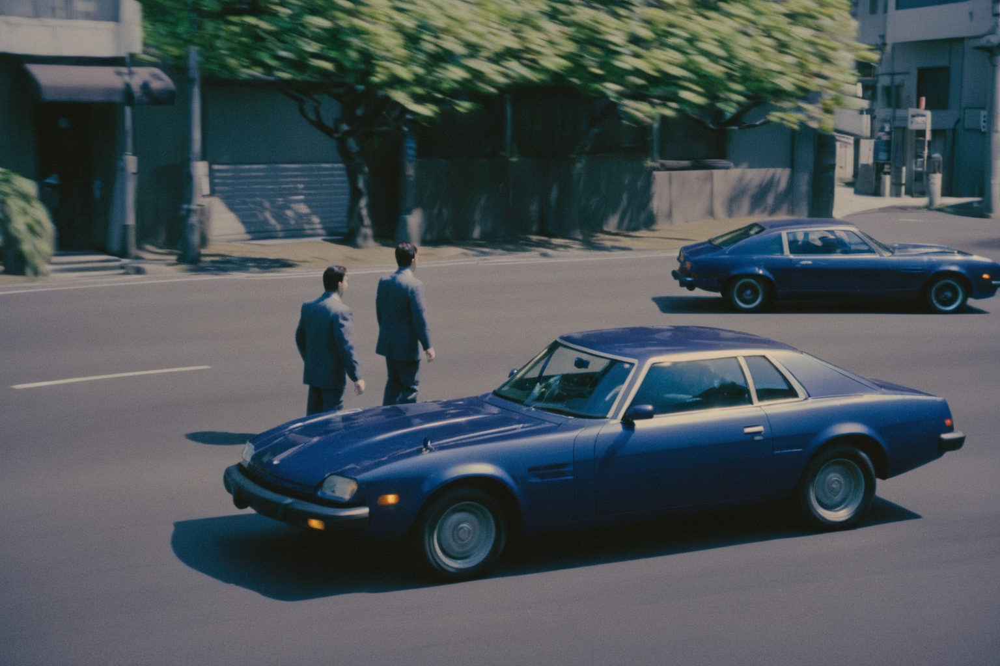
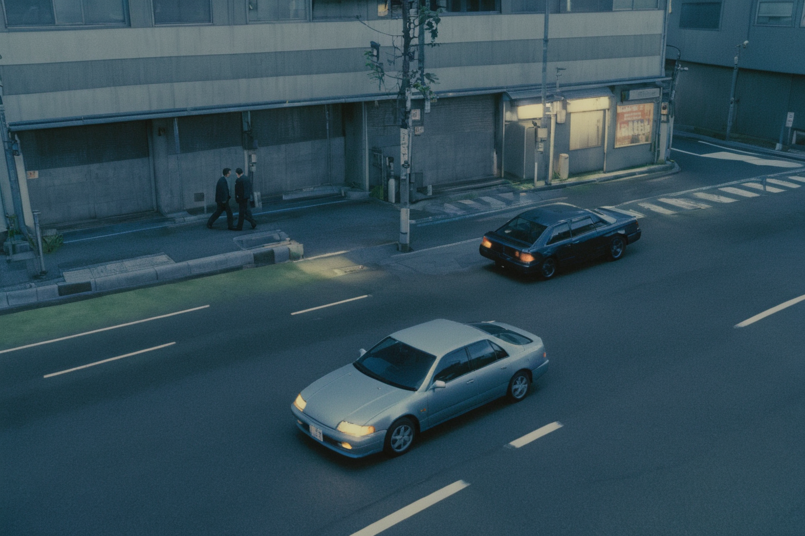